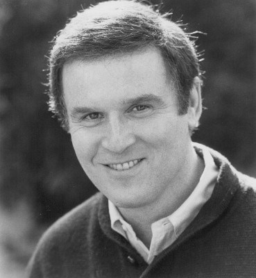
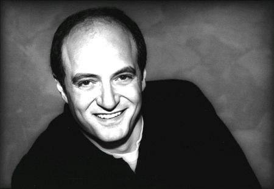

#9502 Filofax - Ich bin Du und Du bist nichts
Alternativ: Taking Care of Business


 IMDB-Wertung: 6.4 / 10
IMDB-Wertung: 6.4 / 10  Metascore: 0
Metascore: 0 
Jimmy Dworski, ein unbekümmerter Knastbruder, hat das Leben im Gefängnis satt. Er bricht aus, findet einen fremden Terminkalender – ein Filofax inklusive Kreditkarten, Bargeld und den Schlüssel zu einer Luxusvilla in Malibu – und damit ein neues Leben. Das Problem: Es gehört einem anderen! Dieser andere, Topmanager Spencer Barnes, dessen Leben durch sein Filofax perfekt durchorganisiert ist, verliert mit demselbigen nicht nur seinen Terminkalender; sein ganzes wohlgeordnetes Leben gerät durcheinander, Ehe und Karriere scheinen zu zerbrechen. Während nun Spencer im Großstadtdschungel von L.A. seinem geliebten und lebensnotwendigen Filofax hinterherjagt, genießt Jimmy das Leben in Saus und Braus und macht nebenbei Karriere. Doch dann prallen diese beiden Extreme aufeinander.
Jahr: 1990
Dauer: 108 Minuten
FSK: 6
Land: USA Studio: Buena Vista PicturesTonspuren: DD2.0 - ,
Untertitel: Deutsch, Englisch,
Auflösung: 1080p (1920x1040) Größe: 8468 MB
Genre: Komödie
Regisseur: Arthur Hiller
Drehbuch: Jill Mazursky, J.J. Abrams
Soundtrack: Stewart Copeland
Darsteller:
 Jim Belushi als Jimmy
Jim Belushi als Jimmy-  Charles Grodin als Spencer
- Anne De Salvo als Debbie
- Loryn Locklin als Jewel
 Hector Elizondo als Warden
Hector Elizondo als Warden- Veronica Hamel als Elizabeth
 Mako als Sakamoto
Mako als Sakamoto- Gates McFadden als Diane
 John de Lancie als Ted
John de Lancie als Ted- Thom Sharp als Mike
- Ken Foree als J.B.
 John Marshall Jones als LeBradford
John Marshall Jones als LeBradford- Andre Rosey Brown als Heavy G
- Burke Byrnes als Prison Guard
-  Stanley DeSantis als Car Rental Man
- Buddy Daniels Friedman als Gang Member
 Chris Barnes als Luggage Boy
Chris Barnes als Luggage Boy- Andrew Amador als Prison Reporter
- Louisa Abernathy als Guard
- Michael Kinney als Malibu Jail Guard
- Janet Julian als Woman on Plane
- Whit Hertford als Yuppie Son
- Joe Torre als Joe Torre
 Hank Robinson als Umpire
Hank Robinson als Umpire- J.J. Abrams als Airplane Passenger (uncredited)
- Stephen Elliott als Walter
- Terrence E. McNally als Hamilton
- Lenny Hicks als Mediator
- Joe Bratcher als Mediator
- Tony Auer als Prison Guard
- Marte Boyle Slout als Brenda
- John P. Menese als Chauffeur
- Tommy Morgan Jr. als Gang Member
- Jill Johnson als Tennis Court Girl
- Tom Nolan als Mr. Wright
- Marjorie Bransfield als Tennis Club Receptionist
 Selma Archerd als Woman in Pro Shop
Selma Archerd als Woman in Pro Shop- Joe Lerer als Ira Breen
- Howie Guma als Sakamoto's Assistant
- Elisabeth Barrett als Diane's Assistant
- Tom Taglang als Waiter
- Michele Harrell als High Quality Receptionist
 Stu Nahan als Radio Reporter at Airport
Stu Nahan als Radio Reporter at Airport- Sandra Eng als Prison Reporter
- Michael McNab als Main Gate Guard
- Leslie Suzan als Malibu Jail Woman
- Dan Kern als Snooty Man
- David Rupprecht als Yuppie Dad
- Baldo Dal Ponte als National Anthem Singer
- Mark Grace als Mark Grace
Datei: X:\1990\Filofax - Ich bin Du und Du bist nichts (1990, FSK6, 1920x1040).mkv seit 05.09.2018
Festplatte: HD 1987-1991
 Es gibt insgesamt 52 Filme in der Gruppe '1990'
Es gibt insgesamt 52 Filme in der Gruppe '1990'